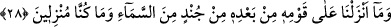

bu ne haldir?” diye sordu. Ahmed b. Hanbel şu cevabı verdi: “Ey Abdullah, şimdi pek
tehlikeli bir zamandayım. Dua ederek bana yardımcı ol. İşte iblis karşımda dikilmiş
hezimet toprağını başımıza serpiyor ve: “Canını bizim darbemizden kurtardın.” diyor.
Ben de: “Henüz değil, henüz değil. Çünkü daha bir nefes kalmış, henüz tehlike
mahallidir, emniyet yeri değildir. İş Hakk’ın inayetine bağlıdır.” diyorum.
Mü’minlerin emîri Ali (r.a.) şöyle der: “Birisini toprağa/kabre koydum. Üç defa
yüzünü kıbleye doğru çevirdim. Her defasında yüzünü kıbleden döndürdü. Sonra şöyle
bir nida işittim. “Ey Ali, elini kaldır/bırak. Çünkü bizim zelil ettiğimiz kimseyi sen aziz
edemezsin.” Bunun aksi de böyledir.
Hadiste şöyle geçer: “Mü’min bir kul fânî olan dünyadan bakâ menziline yöneldiği
zaman gassâl onu yıkamak için teneşirin üzerine yatırınca Kadîm olan Hak tarafından
kerem sıfatıyla şöyle hitap gelir: “Ey Hak dergahına yakın kılınanlar, bakınız o gassal
onun zahirini su ile yıkamakta, biz ise onun bâtınını rahmet suyu ile yıkıyoruz. Ceberût
katının sakinleri: “Ey padişah, onun ağzından parıldayan nûrun nasıl bir nur olduğunu
bize bildir.” derler. Hak Teâlâ şöyle seslenir: “O bizim celalimizin nurudur ki onun
bâtınından zâhirine tecellî eder.” Habîbü’n-neccâr o yüce makama erişince kendisine
“Cennete gir.” denir. Yâni bu dostların naz mekânına, sevenlerin buluşma yerine ve
müştakların huzur bulduğu menzile gir. Orada hem tûbâyı, hem zülfâyı (yakınlığı), hem
de hüsnâ (güzel karşılık) görürsün. Tûbâ, başka kakma olmayan bir yaşayış, zülfâ,
hesapsız sevap/mükâfât, hüsnâ ise perde olmayan dîdar/cemaldir.
Habib o iltifat ve ikramı görünce “Keşke kavmim bilseydi…” dedi. Keşke kavmim de
bizim nereye eriştiğimizi, neyi gördüğümüzü, Hakk’ın iltifâtını gördüğümüzü ve
Allah’ın mağfiretine eriştiğimizi bilmiş olsalardı diye arzu etti.
Ebrârın/iyilerin oturdukları yerde oturduk
İkbal elinden yüz türlü şarabı tattık
Bizim maksudumuz hep Hakk’ın ikramıydı
el-Minnetü lillah ki maksûdumuza eriştik
28. Biz ondan sonra, onun milletini helâk etmek için üzerlerine gökten herhangi
bir ordu indirmedik ve indirecek de değildik.
“Biz ondan” Habîbü’n-neccâr’ın öldürülmesinden “sonra onun milletini” Antakya
halkını Bedir ve Hendek’te yaptığımız gibi “helâk etmek” onlardan intikam almak “için
üzerlerine gökten herhangi bir ordu indirmedik.” Bilakis meleğin korkunç sesiyle
işlerini bitirdik. “Ve indirecek de değildik.” Onun kavmini helâk etmek için gökten ordu
indirmemiz hikmetimize uygun düşmez. Çünkü biz her şey için bir sebep takdir ettik. Bu